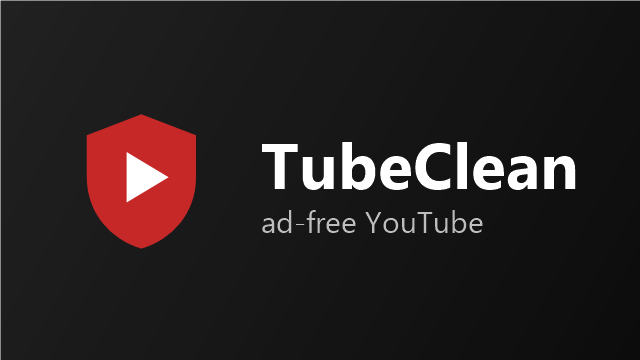

TubeClean on your TV or Android phone
YouTube without the ads, as a guest, with no watch history kept.
What it looks like

First, check your device
TubeClean runs on Android, including the versions of Android inside Fire TV and Google TV.
Not sure which Fire TV you have? Go to Settings›My Fire TV›About and look for “Fire OS” or “Vega OS” in the software version.
TV can’t install it? Plug a Fire TV Stick or a Google TV Streamer into one of its HDMI ports, and install TubeClean on that.
Your download link
It always downloads the newest version. On a TV you’ll type it into the Downloader app; on a phone, tap Download TubeClean in the phone steps below.
Install it
Tap a step’s number when you finish it. Your ticks are remembered on this device.
For every Fire TV running Fire OS, from the 2015 box to the Fire TV Stick 4K Max.
Get the Downloader app
On the Home screen, open search (the magnifying glass) and type Downloader. Pick the one with the orange icon, by AFTVnews, and select Get or Download. It’s free.
Turn on developer mode
Settings›My Fire TV›AboutHighlight the first line (your Fire TV’s name) and press Select 7 times. A message says you’re now a developer. Press Back.
If you already see Developer options under My Fire TV, skip this step.
Allow Downloader to install apps
Settings›My Fire TV›Developer options›Install unknown apps›Downloader: ONOlder Fire TV (Fire OS 5 or 6)?There’s no “Install unknown apps” there. Turn Apps from Unknown Sources ON instead and confirm with Turn On.Download TubeClean
Open Downloader. If it asks for access to files, choose Allow, and close the quick-start tips.
On its Home tab, select the address box, type the download link from above, and select Go.
Install it
An install screen for TubeClean appears. Select Install; if you can’t see the button, press down on the remote to reach it. When it says the app is installed, select Done.
Delete the downloaded file
Downloader offers to delete the file it downloaded. Choose Delete, then Delete again. The app stays installed; only the leftover file goes.
Put it on your Home screen
Open your full list of apps: the Apps icon on the Home screen, or Your Apps & Channels › See All on older models. TubeClean is at the end. Highlight it, press ☰, choose Move, and move it to the front.
Optional, for extra safety: go back to step 3’s screen and turn Downloader OFF. Turn it on again only when you install an update.
For TVs and boxes with Google TV or Android TV. Menu names differ slightly between brands; the older wording is shown where it differs.
Get the Downloader app
Open the Google Play Store on the TV (or search from the Home screen) and look for Downloader. Pick the one with the orange icon, by AFTVnews, and select Install. It’s free.
Turn on developer mode
Settings›System›About›Android TV OS buildHighlight Android TV OS build and press Select 7 times, until it says you’re now a developer.
Older Android TV (Sony, Philips, Mi Box)?Use Settings › Device Preferences › About › Build instead. If it says you’re already a developer, skip this step.Allow Downloader to install apps
Settings›Apps›Security & restrictions›Unknown sources›Downloader: ONOlder Android TV?It’s under Settings › Device Preferences › Security & restrictions › Unknown sources.Download TubeClean
Open Downloader. If it asks for access to files, choose Allow, and close the quick-start tips.
Select the address box, type the download link from above, and select Go.
Install it
Select Install, then Done. When Downloader offers to delete the downloaded file, choose Delete; the app stays installed.
If Google Play Protect asks about an app it doesn’t know, let it scan the app, or choose Install anyway.
Find it and keep it handy
Google TV: go to the Apps tab, then Your apps › See all. Android TV: select Apps on the Home screen. Press and hold Select on the TubeClean tile to add it to your favourites.
Optional, for extra safety: go back to step 3’s screen and turn Downloader OFF. Turn it on again only when you install an update.
For Android phones and tablets. Do these steps on the phone itself.
Download TubeClean
Tap the button in Chrome (or type the link from above into Chrome’s address bar). If Chrome warns that the file might be harmful, choose Download anyway. Chrome says that about every app that doesn’t come from the Play Store.
Samsung?Samsung Internet works the same way. Its file goes to My Files › Downloads.Open the file
Tap Open on the “Download complete” message. If it’s gone, open the Files app (My Files on Samsung), go to Downloads, and tap TubeClean.apk.
Allow installs from that app
If the phone says it isn’t allowed to install unknown apps from this source, tap Settings, turn on Allow from this source, then go back. It only asks the first time.
Android 7 or older?Instead, it sends you to Settings › Security › Unknown sources. Turn it on, confirm with OK, then go back.Xiaomi, Redmi or POCO?An extra security check may appear. Tap Continue or Install anyway; you may have to wait a few seconds for the button.Install it
Tap Install, then Open. From then on, open it from the red shield icon shown at the top of this page.
If Google Play Protect asks about an app it doesn’t know, let it scan the app and then install, or tap More details › Install anyway.
Delete the downloaded file
In Files › Downloads, delete TubeClean.apk. The app stays installed; only the leftover file goes.
Optional, for extra safety: turn Allow from this source off again, and back on only when you install an update.
Amazon Fire tablet? Fire tablets run Fire OS, which is Android, so the same steps should work with the Silk browser. Allow it under Settings › Security & Privacy › Apps from Unknown Sources. This hasn’t been tested yet.
Getting a new version
When you hear there’s a new version, install it the same way, straight over the old one. There’s no need to uninstall first, and your ad counts carry over.
- Fire TV, Google TV, Android TV: steps 4 to 6 (Downloader is already set up).
- Phone: steps 1, 2, 4 and 5.
Using TubeClean
The Home screen looks almost empty because nothing about you is remembered, so start with Search. There’s no sign-in.
On a Fire TV, Google TV or Android TV
Each time it opens, it takes a few seconds to get past YouTube’s welcome screens on its own. The very first video you play may take about 20 seconds to start.
Many Google TV remotes have no ☰ button. Ads are still blocked; the counts just can’t be shown on those TVs yet.
On a phone
You get YouTube’s mobile site with the ads taken out.
On both, searches and watch history are erased whenever you leave the app: going Home, switching apps, or the screen turning off. Only the count of blocked ads is kept on the device.
If something goes wrong
- “Not allowed to install unknown apps from this source”
- Step 3 isn’t done yet. Allow Downloader (TV) or your browser or Files app (phone), then try again.
- Downloader shows a web page or an error instead of downloading
- Check the link letter by letter and select Go again.
- “App not installed”
- Check your device at the top of this page. If it should work, tell the person who sent you this page the model and its Fire OS, Android TV or Android version.
- Google Play Protect blocked it
- Tap More details, then Install anyway. Play Protect warns about any app that isn’t from the Play Store.
- YouTube asks you to “sign in to confirm you’re not a bot”
- You have an old version. Install the newest one from the link above; it goes straight over the old one.
- TubeClean shows “Blocker needs revision”
- YouTube changed something and a few ads may slip through. Let the person who sent you this page know; a fix will follow as a new version.
- You want to remove it
- Fire TV: Settings›Applications›Manage installed applications›TubeClean›Uninstall Google TV / Android TV: Settings › Apps › TubeClean › Uninstall. Phone: press and hold the TubeClean icon, then choose App info › Uninstall.